Even as a kid, I loved collecting things. At the annual Scholastic Book Fair, I would scrape together spare change just to buy those little food-shaped erasers—my prized treasures at the time. As a teen, my collecting naturally shifted toward selective physical media and figures, expanding far from the Bratz dolls I used to own. Now, with my own adult money, I can treat myself to pieces that truly match my interests: figures from anime, video games, and unique artist-made series.
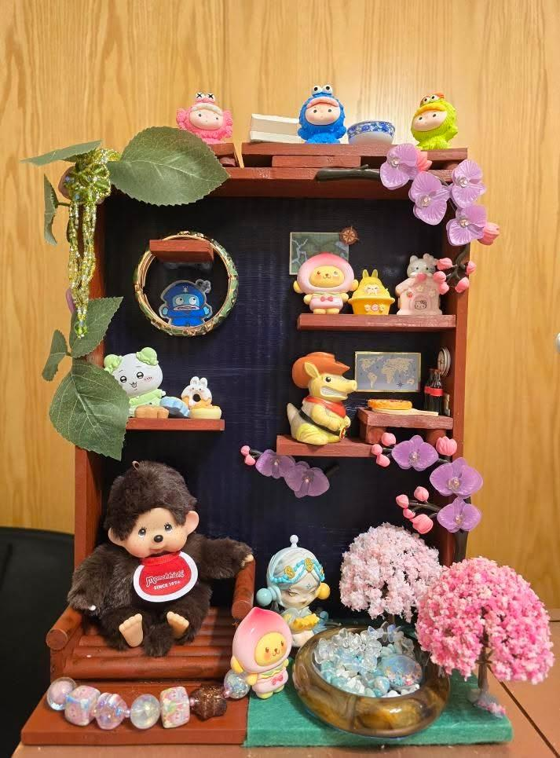
───୨ৎSKULLPANDA─
Xiong Mao is the Chinese artist behind the popular Skullpanda characters! Know for a design that is mysterious and edgy, Skullpanda has a skull-shaped helmet and panda-like features. With the various themes, the creator intended to show transformation, balance, and duality through the character's design. The color palettes can be described as moody and dreamy. Below, I attached three of my favorite figure series: Everyday Wonderland, The Ink Plum Blossom, The Sound.
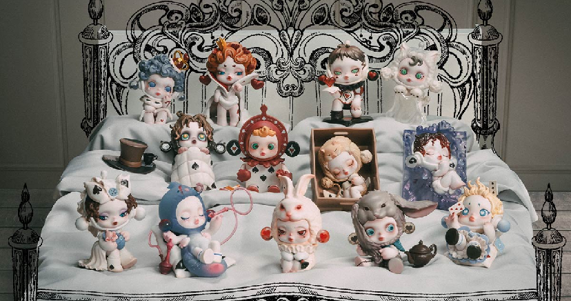
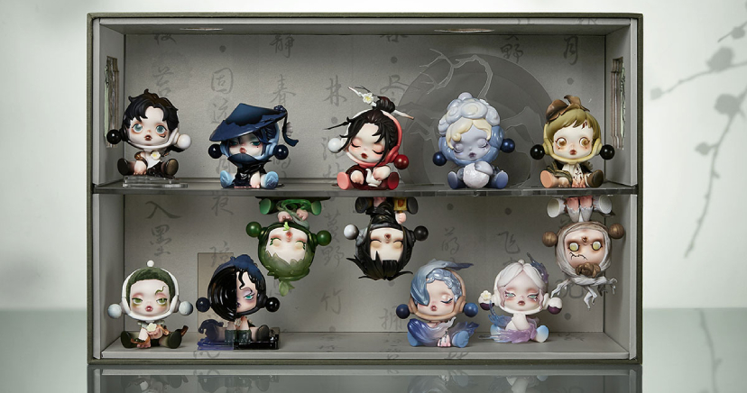
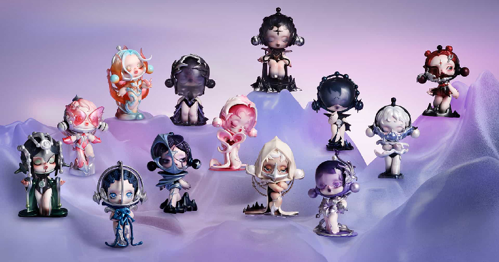
Eventually, I want to collect the 1000% and 400% figures. However, I currently have my eyes on the newest release: The Feast Begins
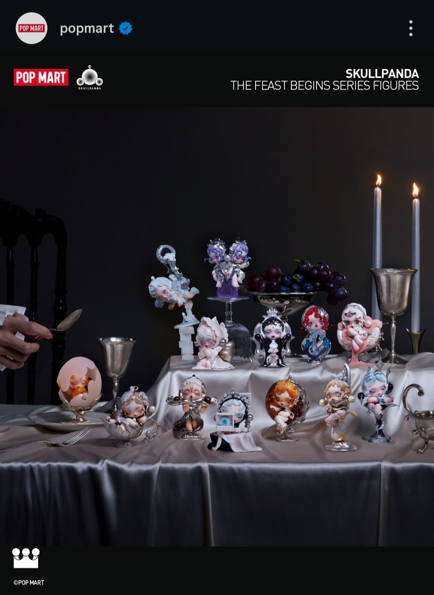
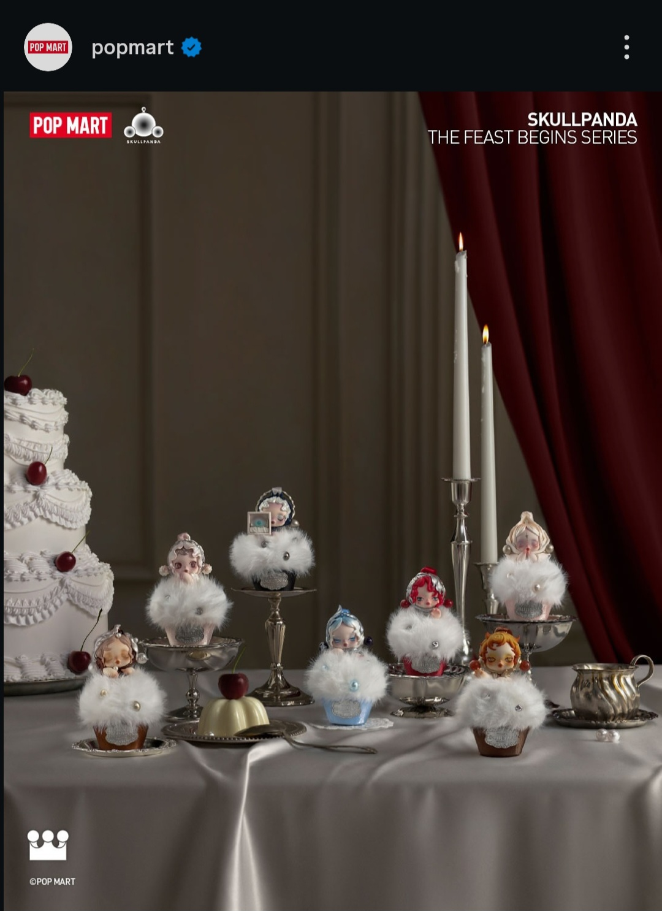
───୨ৎPEACH RIOT─
Peach Riot is a stylized “punk-fairy” girl-band created by artist Libby Frame for POP MART — a trio blending ’90s grunge, riot-grrrl attitude, and whimsical anime-inspired aesthetics. Their figures come in blind-box or themed-series drops (like “Rise Up,” “Rush Hour,” “Punk Fairy,” and more), each release offering different outfits, moods, and imaginative identities. What makes them special is not just their design, but their concept: Peach Riot isn’t only about collectible toys, but evokes a sense of personality, expression, and youthful rebellion.
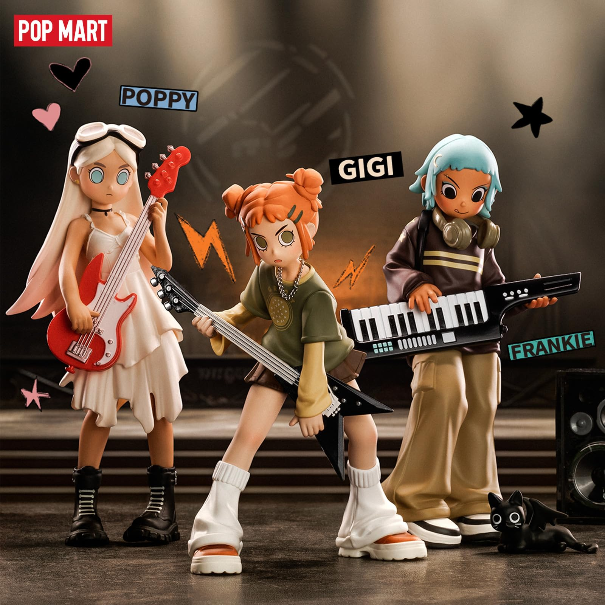
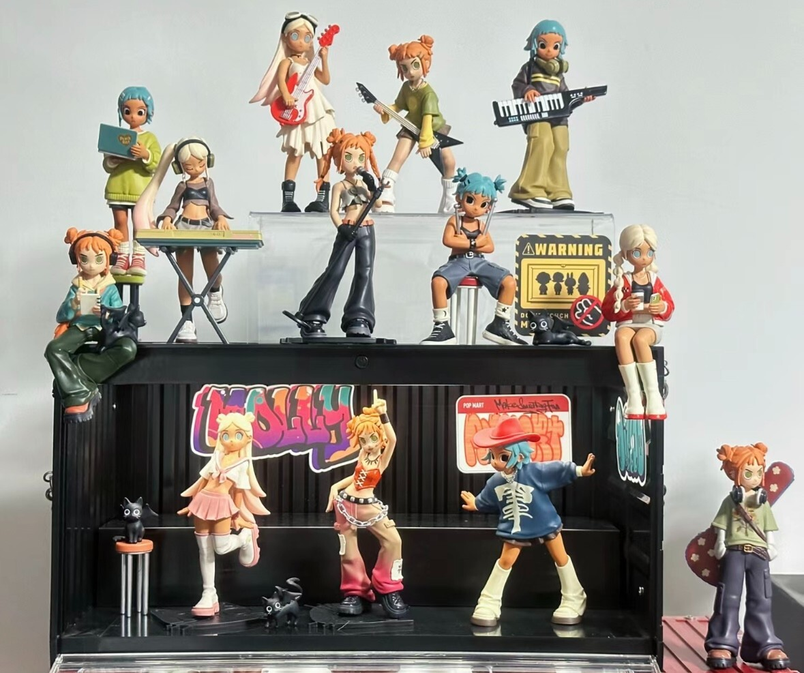
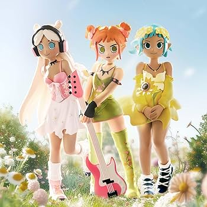
───୨ৎDODO NAMI─
If you're familiar with One Piece, then you might recognize Dodo Nami's name resemblance to a character from that anime. Although completely separate from One Piece itself, Dodo Nami's design was inspired by Nami. Jennifer Nyugen writes that the artist, Dodo Sugar doesn't have a background story published but fans associate the Dodo Nami with immortality, soul, redemption, endless, eden, and freedom. Through varying symbollism, the figures come in a set within its specific series. And the artisty conveys a storytelling-like essence. I find that Dodo Nami's face expressions and poses are very ethereal.
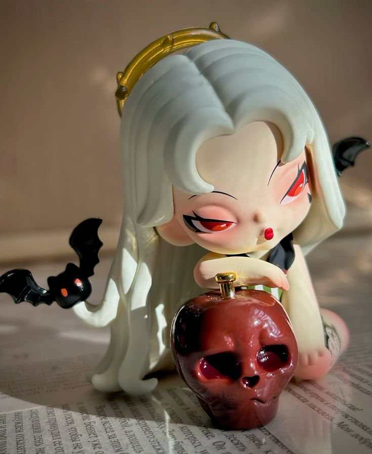
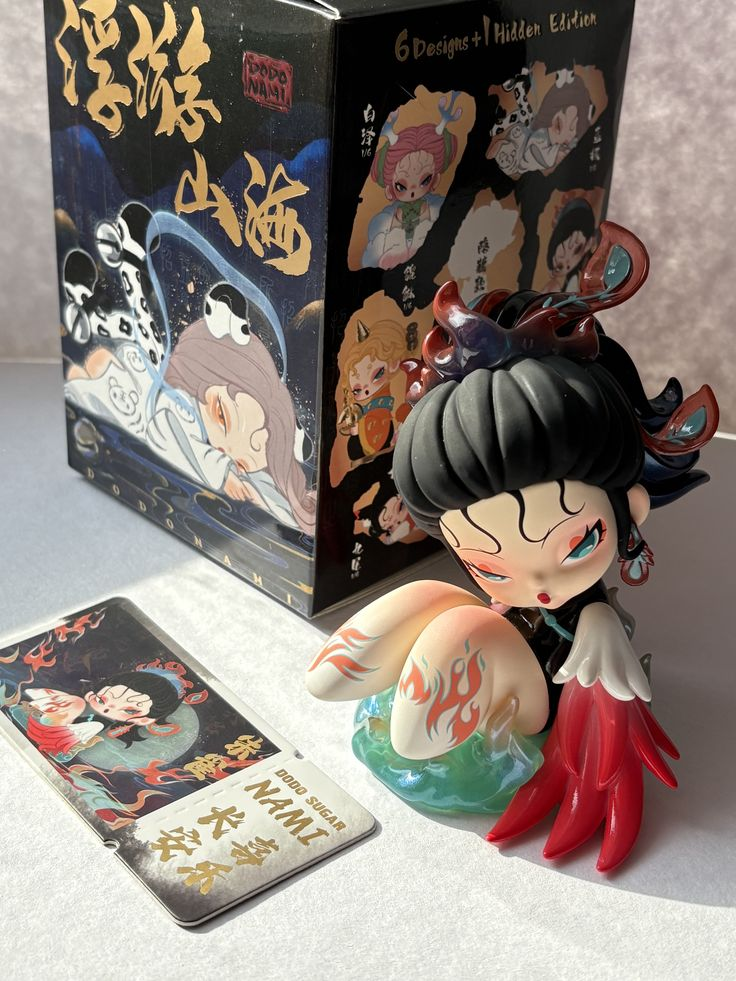